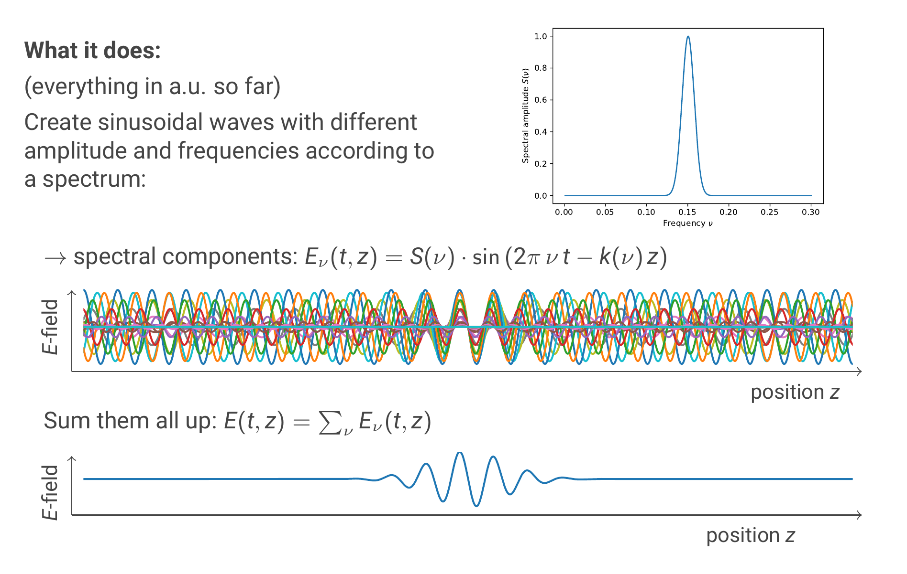
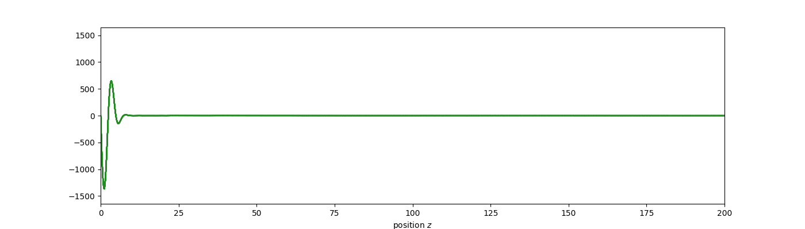
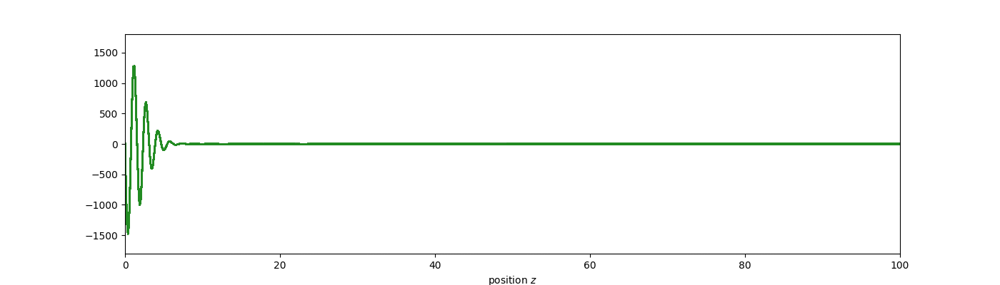
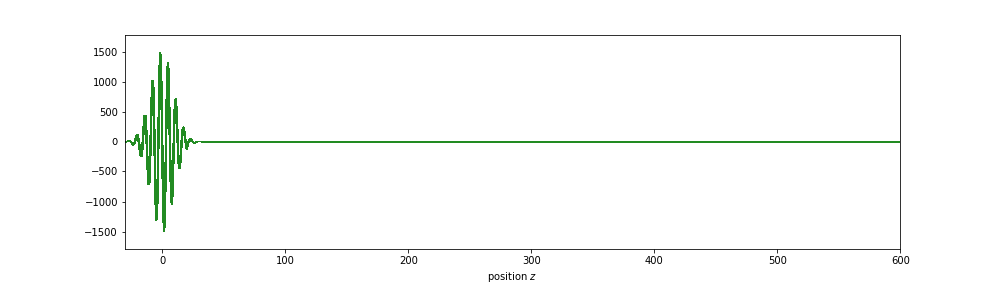

Examples#
You start with defining a frequency spectrum of the pulse you want to visualise.
Afterwards, the code constructs the spectral components of the pulse according
to the frequency spectrum you defined. This means that the final pulse is the
sum of all the spectral components. The spectral components are just sinusoidal
waves with the corresponding frequency. In order to visualise the propagation
of such a pulse, the wave vector k is calculated as a function of the
frequency k(ν).
k(ν) = k(ν0) + k'(ν0) * (ν - ν0) + 1 / 2 * k''(ν0) * (ν - ν0) **2 + ...
The function is constructed as the Taylor expansion around the center
frequency ν0.

This allows to visualise different effects that occur when propagating the pulse along a z-axis.
Phase velocity and group velocity#
If the refractive index is the same for all frequencies, then the wave vector
k(ν) has to fulfill the equations
k(ν0) = k'(ν0) * ν0 , k'(ν0) = n / c_0
where n is the refractive index and c_0 the speed of light in vacuum. The
resulting propagation looks like this
from panim import *
import os
import numpy as np
# Special case without dispersion
z = np.linspace(0, 200, 1000)
p = calc_pulses(
z,
t_start=0,
t_end=2000,
n_steps=20,
nu_center=0.02,
k_i=[10 * 2 * np.pi * 0.02, 10, 0],
spec_width=600,
)
animate(
z,
p,
ms_between_frames=40,
figuresize=(14, 4),
saveas="./examples_output/group_equal_phase.gif",
)

which means that phase velocity and group velocity are the same here.
If k(ν0) and k'(ν0) do not fulfill the conditions as in the above
example, the phase velocity and the group velocity differ.
Assuming that all higher order derivatives vanish, the resulting
propagation looks like this:
# First order dispersion
z = np.linspace(0, 100, 1000)
p = calc_pulses(
z,
t_start=0,
t_end=1000,
n_steps=20,
nu_center=0.025,
k_i=[4, 10, 0],
spec_width=600,
)
animate(
z,
p,
ms_between_frames=40,
figuresize=(14, 4),
saveas="./examples_output/1st_order_dispersion.gif",
)

Group delay#
Group delay in general is the derivative dφ/dω. In physical terms, the group
delay is the time it take for a spectral component to propagate through the
system you are looking at. Therefore, if the different spectral components
propagate at different velocities like in an optical fibre, the group delay
changes with the frequency.
Since the phase is φ(ω) = k(ω) * z, we get for the group delay
T(ω) = dφ/dω = z * 2 * π * ( k'(ν0) + k''(ν0) * (ν - ν0) + ... )
The different orders here are the different orders of dispersion. Zeroth order dispersion basically means that the group velocity differs from the phase velocity (the case in the previous animation).
Group velocity dispersion#
If also the second order dispersion is non-zero, then group velocity dispersion (GVD) occurs, resulting in a linear frequency chirp of the pulse:
# Second order dispersion (group delay dispersion/ group velocity dispersion)
# (see https://www.rp-photonics.com/group_velocity_dispersion.html)
z = np.linspace(-30, 600, 1000)
p = calc_pulses(
z, t_start=0, t_end=2500, n_steps=50, nu_center=0.02, k_i=[1, 3, 2], spec_width=600,
)
animate(
z,
p,
ms_between_frames=40,
figuresize=(14, 4),
saveas="./examples_output/group_velocity_dispersion.gif",
)

Spatial representation vs. time representation#
As can be seen in the animation above, when having GVD the pulse become asymmetical along the z-axis. However, this is not the case when looking at the electric field at one fixed position as a function of time. This is shown in the animation below. The upper animation shows the propagation of the pulse along the z-axis, while the lower animation shows the electric field of the pulse at the position which is marked in the upper animation with the vertical line as a function of time.
In the time domain (at a fixed position), the pulse still has a gaussian shape, since only the spectral phases are changed, but not the amplitudes, which means that the spectral distribution is still a gaussian, and therefore also the pulse in time is a gaussian.